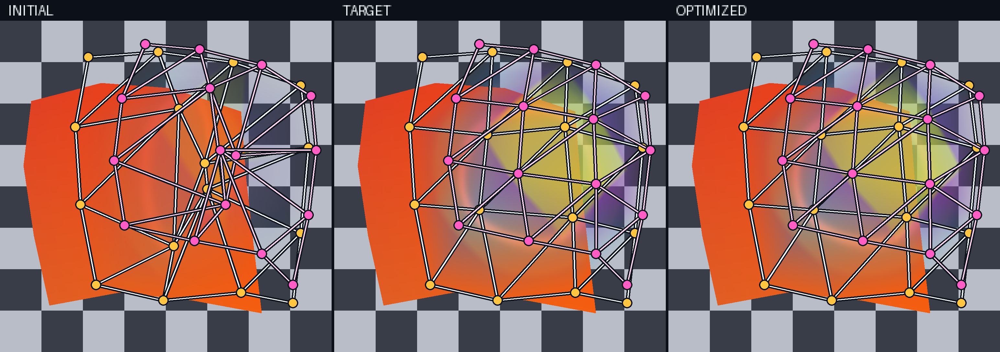
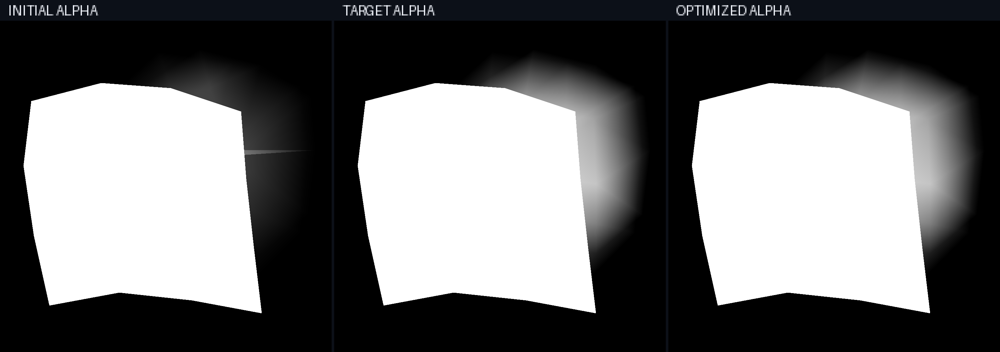

Optimizing transparent mesh layers over opaque geometry#
Transparent surfaces require more than selecting the nearest triangle at each
pixel. Every covered fragment may contribute to the image, and its contribution
depends on both its appearance and the transmittance left by fragments in front
of it. drtk.render_transparent() evaluates fragments in depth order
and returns composited color and alpha while retaining gradients to mesh and
appearance inputs.
This example fits two overlapping semitransparent mesh layers above a fixed opaque rear mesh. Each of the three layers is a 4 x 4 patch with sixteen vertices and eighteen triangles. Their topology, boundary vertices, depth, UV coordinates, and texture remain fixed. The rear opacity is fixed at one. Optimization changes the projected positions of eight interior vertices, four in each transparent layer, and their eight vertex-opacity values. Outer opacity on both transparent patches remains zero, so the input geometry explicitly provides smooth transparent boundaries.
Fixed appearance#
The renderer samples the following procedural three-tile atlas. The orange tile belongs to the opaque rear layer, the blue circle motif belongs to the transparent middle layer, and the purple and yellow diamond belongs to the transparent top layer. All texture tiles are opaque; independent interpolated vertex-opacity fields control material transparency.
Because this atlas stores conventional color and alpha rather than learned raw
parameters, the example selects rgb_activation="identity" and
alpha_activation="clamp". Learned direct textures default to ReLU RGB and
ReLU-density alpha. Neural appearance models instead shift the ReLU inputs by
0.5 because their final affine outputs are naturally centered near zero.

Fixed texture input for the opaque rear mesh and two transparent meshes.#
Geometry and opacity fitting#
The initial middle and top geometry is distorted and both transparent layers have incorrect opacity. A color-and-alpha reconstruction objective is differentiated through texture sampling, perspective-correct interpolation, depth-sorted compositing, and the learned inputs. The optimized result closely approaches the target without changing topology, opaque rear geometry, or texture.


Initial, target, and optimized color. White lines with yellow points show the middle mesh; pink lines with magenta points show the top mesh. The checkerboard and mesh overlays are visualization aids and do not participate in rendering or optimization.#
The checkerboard is composited after rendering as
premultiplied_color + (1 - alpha) * checkerboard. The opaque rear mesh hides
it, while transparent patch regions that extend beyond the rear mesh reveal it.
Different orange, blue, purple, and yellow mixtures make the depth-sorted
contributions of both transparent layers directly legible. The renderer itself
returns the premultiplied color and accumulated alpha shown below.


Accumulated alpha for the same three states. The opaque rear mesh appears white; the transparent extensions reveal the optimized support and opacity of the middle and top layers.#
The example separates quantities that are easy to conflate in transparent rendering:
topology is the fixed set of triangle indices;
geometry is the learnable projected position of interior vertices;
appearance comes from a fixed RGB or RGBA texture; and
material opacity is fixed at one for the rear mesh and independently interpolated from learned vertex values for both transparent meshes.
The renderer accepts arbitrary triangle meshes rather than only regular grids.
Multiple overlapping meshes may share an atlas or use different atlas regions.
For learned appearance, render_transparent_mlp samples one feature texture.
render_transparent_mlp_two_textures instead samples texture0 at uv0
and texture1 at uv1 before concatenating their features. Both preserve
the same geometry, sorting, and compositing model.
Gradient scope#
Gradients to vertex positions arise from perspective-correct interpolation of UVs and opacity inside covered triangles. Hard triangle coverage and changes in depth order remain discrete. This example therefore holds both transparent patch boundaries fixed. Smooth texture variation and interpolated opacity inside each triangle supply the image-space signal for interior deformation.
Applications that must move a visible silhouette can combine this renderer with explicit feather geometry, a suitable edge-gradient method, or another problem-specific visibility approximation. These choices belong to the mesh and optimization model rather than to the general transparent-compositing API.